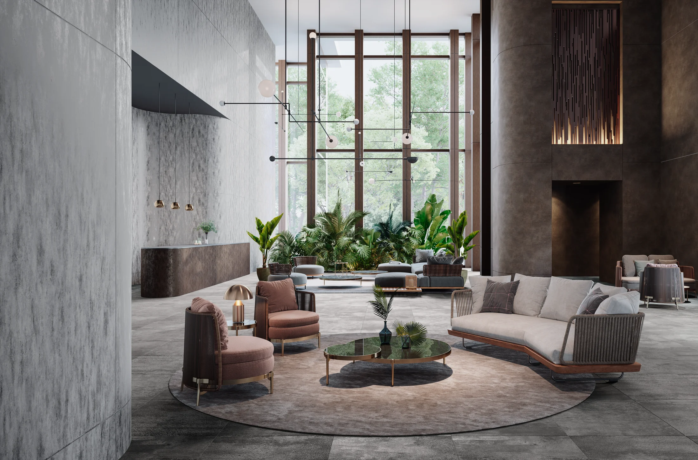
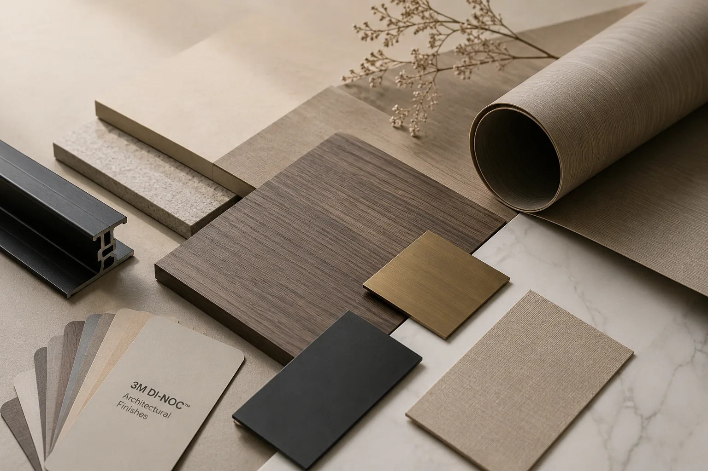
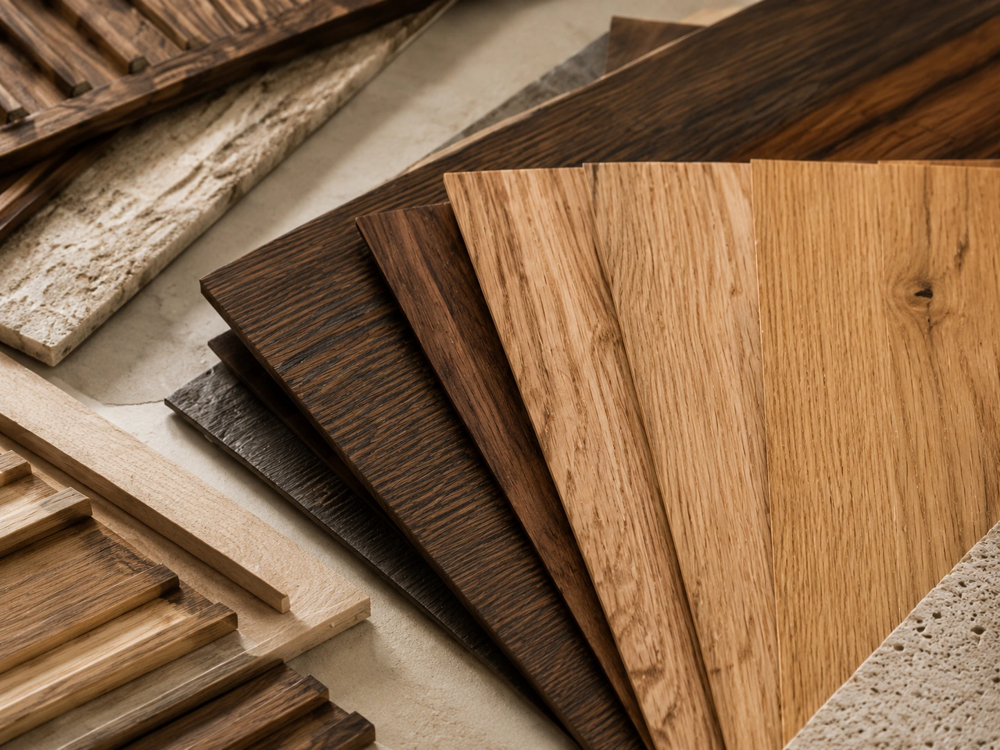
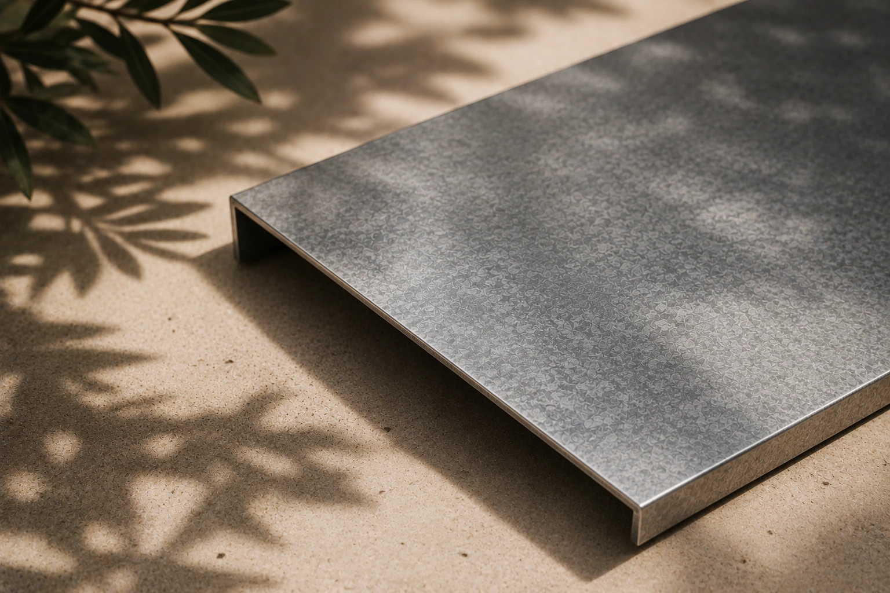
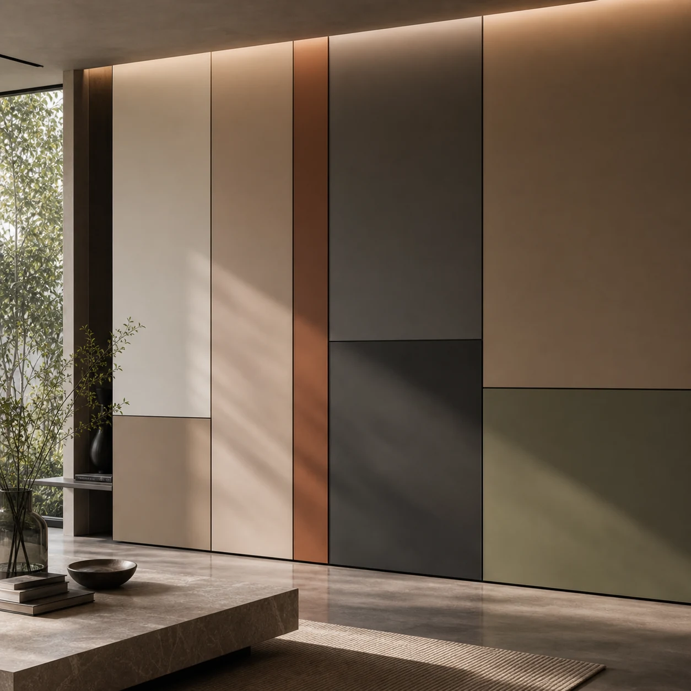
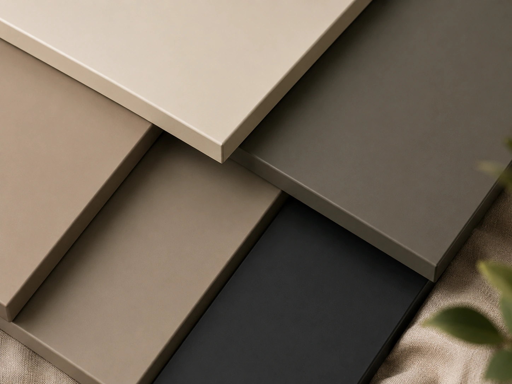
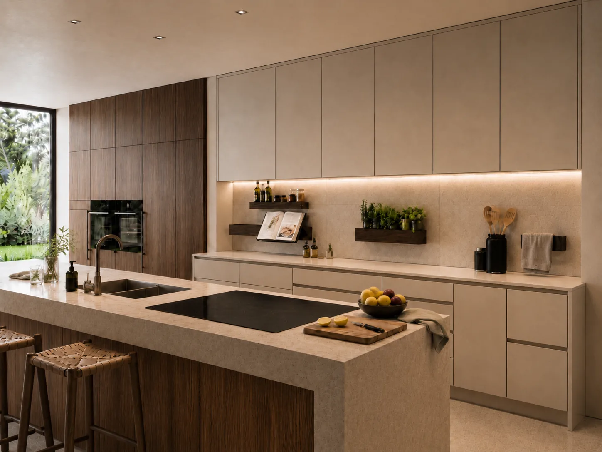

04 · Materiali
La materia
segue il progetto.
IconicWall nasce con le finiture 3M Di-NOC e si apre a verniciature, laccature, impiallacciature e soluzioni custom valutate su progetto.


La base materica
Finiture
3M DI-NOC
IconicWall nasce per dialogare con le finiture 3M Di-NOC: una libreria materica professionale capace di interpretare legni, metalli, pietre, tessuti e texture decorative con continuità, precisione e qualità architettonica.
Da questa base nasce il linguaggio materico del sistema. Quando il progetto lo richiede, la stessa struttura può accogliere anche verniciature, laccature, impiallacciature e finiture sviluppate su misura, valutandone insieme fattibilità, durabilità e resa estetica.
Scarica catalogo 3M Di-NOC ↓Estensione progettuale
Oltre il
catalogo.
La materia non è un vincolo, ma una scelta progettuale.
Oltre alle finiture 3M Di-NOC, IconicWall può essere sviluppato con verniciature, laccature, impiallacciature e finiture speciali valutate su progetto.
Ogni soluzione viene verificata insieme al progettista, considerando resa estetica, applicazione, manutenzione e durata nel tempo.

Più di una
superficie.
Ogni pannello può essere interpretato in base al progetto, al contesto e al linguaggio materico scelto dal progettista.
Le finiture 3M Di-NOC rappresentano la base materica principale del sistema. Accanto a questa libreria, è possibile valutare finiture tradizionali e soluzioni decorative speciali, mantenendo continuità estetica e coerenza tecnica.







Ogni progetto ha
la sua materia.
IconicWall offre la struttura. La finitura nasce dal progetto.